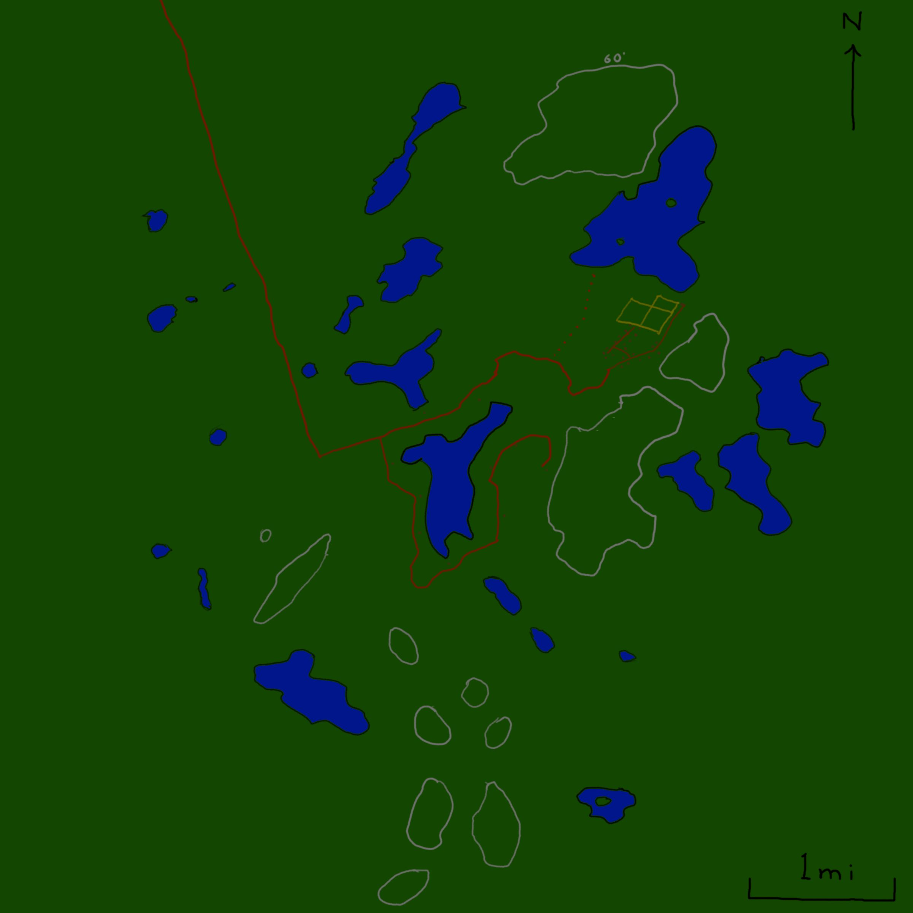

You (the player) will create two characters for this one-shot; one low (3rd or lower) level, and one high (13th or lower) level.
Each member of the low level party is relatively new to adventuring. The party could be recently established or it could come together at the start of this one-shot.
The high level party is an established party of seasoned adventurers. You are renowned nation-wide and are called upon to strategically solve large-scale problems.
Before the session, or as a workshop at the start of it, social connections between all the characters should be created. Use the tables below to either pick or randomly generate some connections, or come up with your own equally-strong connections.
The connections should generally be strong, but the strongest connections should be prioritized as follows:This section applies to the low level party.
A desperate request has piqued your interest. You frequent a town called Arguquar, which is north of a little-known cottage-land. A man has come from the cottage-land to explain his plight. His son has gone missing. He pooled money with the other cottagers and is offering 1000 gold to whoever can find his son. As well, the cottagers put their knowledge together and think they see a pattern. Another cottager has a full listing of missing people. Seems whatever is causing this is somewhere southwest of the cottagers.
You research the area. Your understanding is represented below. The cottage-land is along the south leg of the road.
The cottagers are relatively well-off and buy sustenance from Arguquar.
There is an even lesser known self-sufficient village down the east fork in the road.
In this world, tieflings and half-humans are rare and tend to stick together.
Today is October 16th of the year 221, of the eighth common era.
If you want to generate your connections randomly, you can follow these steps.